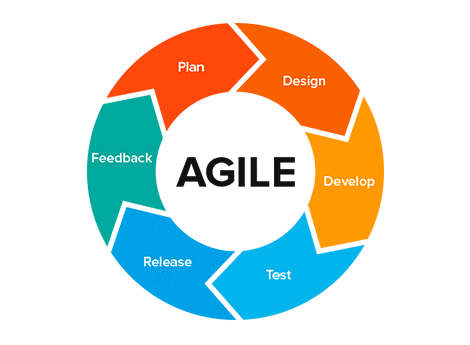

+1 (530) 760-6526 | vikrao@ucdavis.edu | Davis, CA-95616
I am master's student at University of California Davis, Microsoft Certified Professional.
CS Grad with 4-years experience in s/w project planning, engineering, coding, R&D.
I have been working on innovative projects in IoT, robotics, blockchain, wireless networks, VR/AR, AI/NLP areas.
Leveraged Amazon AWS, Azure & Google Cloud services in projects.
Experienced in managing complete SDLC cycle of large-scale distributed systems (such as ERP, CMS & MIS systems). I develop games with AI too!
Senior Project Engineer, Indian Institute of Information Technology, 1−year, Nov 2017 - Jan 2019
Senior Product Engineer, Merferry Technologies, India, 3−years, Sept 2014 - Sept 2017
DESI Searchengine(IFCT challenge) : Amazon Alexa-based INDIAN FOOD search engine using AI/NLP Models
Alexa/Web search detailed food composition among 528 key Indian foods using DESI with 89% relevance. DESI uses NLP.
GUARDIAN : Blockchain-based fault tolerant abstraction layer for IoT Swarm
Prototyping reliable blockchain-based abstraction layer for IoT swarm to protect swarm against misleading, malicious IoT’s.
e-AGROmet IoT (Dean's Award) : Weather station apparatus with online dashboard to forecast weather using AI
Developed multi-model Agro-meteorological apparatus to monitor growth of Algal bloom and introduced AI to predict weather
Underwater Robot (Won 2nd among 13 countries) : IEEE Singapore underwater robot challenge
Mentor of Team Tiburon which won in NUS Singapore UAV 2018 challenge and selected in U.S. Naval Research Robosub 2019
Robots with VR/AR (Spot Award) : Virtual Reality based mobile robots racing GAME for engaging school kids
Developed cloud-controlled robot and built VR App, so schools kids located ~372 miles apart can play with our robot virtually!
Bio-AUTH gadget (Best project Award, Nominated) : Secure fast friendly fingerprint attendance system for employers
Developed k−d tree based algorithm to search faster in 0.3s. With dashboard to track working hours, late and absent employees
NITR-Info System (Chairman's Recognition) : Official University Website with MIS used by students, faculties every day
Developed and directed official University Website and its MIS from scratch in .Net/MsSQL. 159k visitors/month. 55 modules.